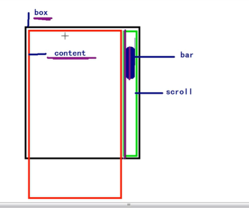

床前明月光，疑似地上霜，举头望明月，低头思故乡。床前明月光，疑似地上霜，举头望明月，低头思故乡。床前明月光，疑似地上霜，举头望明月，低头思故乡。床前明月光，疑似地上霜，举头望明月，低头思故乡。床前明月光，疑似地上霜，举头望明月，低头思故乡。床前明月光，疑似地上霜，举头望明月，低头思故乡。床前明月光，疑似地上霜，举头望明月，低头思故乡。床前明月光，疑似地上霜，举头望明月，低头思故乡。床前明月光，疑似地上霜，举头望明月，低头思故乡。床前明月光，疑似地上霜，举头望明月，低头思故乡。床前明月光，疑似地上霜，举头望明月，低头思故乡。床前明月光，疑似地上霜，举头望明月，低头思故乡。床前明月光，疑似地上霜，举头望明月，低头思故乡。床前明月光，疑似地上霜，举头望明月，低头思故乡。床前明月光，疑似地上霜，举头望明月，低头思故乡。床前明月光，疑似地上霜，举头望明月，低头思故乡。床前明月光，疑似地上霜，举头望明月，低头思故乡。床前明月光，疑似地上霜，举头望明月，低头思故乡。床前明月光，疑似地上霜，举头望明月，低头思故乡。床前明月光，疑似地上霜，举头望明月，低头思故乡。床前明月光，疑似地上霜，举头望明月，低头思故乡。床前明月光，疑似地上霜，举头望明月，低头思故乡。床前明月光，疑似地上霜，举头望明月，低头思故乡。床前明月光，疑似地上霜，举头望明月，低头思故乡。床前明月光，疑似地上霜，举头望明月，低头思故乡。床前明月光，疑似地上霜，举头望明月，低头思故乡。床前明月光，疑似地上霜，举头望明月，低头思故乡。床前明月光，疑似地上霜，举头望明月，低头思故乡。床前明月光，疑似地上霜，举头望明月，低头思故乡。床前明月光，疑似地上霜，举头望明月，低头思故乡。END
